건설재료시험기사 (2015-09-19 기출문제)
1과목: 콘크리트공학
1. 굳은 콘크리트의 압축강도 시험에 대한 설명으로 잘못된 것은?
- 공시체 양생은 202℃에서 습윤상태로 양생한다.
- 공시체는 지름의 3배의 높이를 가진 원기둥형으로 하며, 그 지름은 굵은 골재의 최대치수의 3배 이상, 150mm 이상으로 한다.
- 몰드를 떼는 시기는 태우기가 끝나고 나서 16시간 이상 3일 이내로 한다.
- 하중율 가하는 속도는 압축 응력도의 증가율이 매초(0.6 ± 0.4)MPa이 되도록 한다.
(정답률: 54%)

2. 프리플에이스트 콘크리트에 사용되는 굵은 골채의 최소 치수에 대한 설명으로 틀린 것은?
- 질량으로 적어도 35% 이상 남는 체중에서 최대 치수의 체눈의 호칭치수로 나타낸 굵은 골재의 치수를 말한다.
- 일반적으로 굵은 골재의 최대 치수는 최소 치수의 2~4배 정도로 한다.
- 굵은 골재의 최소 치수는 15mm이상으로 하여야한다.
- 굵은 골재의 최소 치수가 작을수록 주입 모르타르의 주입성이 현저하게 개선된다.
(정답률: 41%)
3. 일반 콘크리트의 계량 및 비비기에 대한 설명으로 틀린 것은?
- 계량은 현장 배합에 의해 실시하는 것으로 한다.
- 혼화제를 녹이는 데 사용하는 물이나 혼화제를 묽게 하는 데 사용하는 물은 단위구향의 일부로 보아야 한다.
- 비비기 시간에 대한 시험을 실시하지 않은 경우 그 최소 시간은 강제식 믹서일 때에는 1분 30초 이상일 표준으로 한다.
- 비비기는 미리 정해둔 비비기 시간의 3배 이상 계속하지 않아야한다.
(정답률: 83%)
4. 공기 중의 탄산가스의 작용을 받아 콘크리트 중의 수산화칼슘이 서서히 탄산칼슘으로 되어 콘크리트가 알칼리성을 상실하는 것을 무엇이라 하는가?
- 알칼리방응
- 염해
- 손식
- 중성화
(정답률: 84%)
5. 콘크리트 워커빌리티 측정 방법이 아닌 것은?
- 슬럼프 시험
- Vee-Bee 시험
- 흐름시험
- 지깅 시험
(정답률: 80%)
6. 다음 중 품질관리의 순서로 옳은 것은?
- 계획-실시-검토-조치
- 계획-검토-조치-실시
- 검토-계획-조치-실시
- 검토-계획-실시-조치
(정답률: 79%)
7. 콘크리트의 블리딩시험(KS F 2414)에 대한 설명으로 틀린 것은?
- 블리딩 시험은 굵은 골재의 최대 치수가 50mm이하인 경우에 적용한다.
- 콘크리트를 블리딩 용기에 채울 때 콘크리트 표면이 용기의 가장자리에서 3±0.3cm높아지도록 고른다.
- 시험 중에는 실온20±3℃오 한다.
- 기록한 처음 시각에서 60분 동안 10분마다 콘크리트 표면에 스며나온 물을 빨아낸다.
(정답률: 64%)
8. 콘크리트의 알칼리 골재반응을 일으키는 광물이 아닌 것은?
- 석회암
- 오팔
- 은미정질의 석영
- 화상성 유리
(정답률: 47%)
9. 일반콘크리트의 타설 우 다지기에서 내부진동기를 사용할 경우 진동다지기는 얼마정도의 간격으로 찌르는가?
- 0.2m이하
- 0.5m이하
- 1.0m 이하
- 1.5m 이하
(정답률: 83%)
10. 고압중기양생을 실시한 콘크리트의 특징에 대한 설명으로 틀린 것은?
- 고압증기양생을 실시한 콘크리트는 용해성의 유리석회가 없기 때문에 백태현상을 감소시킨다.
- 외관은 보통양생한 포틀랜드시멘트 콘크리크 색의 특징과 다르며, 주로 흰색을 띤다.
- 보통양생한 콘크리트에 비해 철근의 부착강도가 증가된다.
- 고압증기양생한 콘크리트는 어느 정도의 취성을 가진다.
(정답률: 88%)
11. 시방 배합에 의한 단위 잔골재량은 7⑤kg/m3 ,단위 굵은 골재량은 110kg/m3이다. 현자의 입도에 대한 골재 상태가 5mm체에 남는 잔골재량은 4%이고 5mm 체를 통과하는 굵은 골재량은 3%이다. 입도에 의한 현장 배합의 잔골재량(X kg)과 굵은 골재량 (Y kg)은?(오류 신고가 접수된 문제입니다. 반드시 정답과 해설을 확인하시기 바랍니다.)
- X=680, Y=1126
- X=700, Y=1106
- X=720, Y=1086
- X=740, Y=1066
(정답률: 63%)
12. 22회의 실험실적으로부터 구한 콘크리트 압축강도의 표준편차가 5MPa이고, 설계기분압축강도가 40MPa인 경우 배합강도는? (단, 시험횟구가 20회인 경우 표준편차의 보정계수는 1.08이고, 시험횟수가 25회인 경우 표준편차의 보정계수는 1.03이다.)
- 46.5MPa
- 47.2MPa
- 48.4MPa
- 48.9MPa
(정답률: 62%)
13. 매스(mass)콘크리트의 온도 균열을 방지 또는 제어하기 위한 방법으로 잘못된 것은?
- 외부구속을 많이 받는 벽체 구조물의 경우레는 균열유발줄눈을 설치하여 균열발생위치를 제어하는 것이 효과적이다.
- 콘크리트의 프리쿨링, 파이프쿨링 등에 의한 온도 저하 방법을 사용하는 것이 효과적이다.
- 조강포틀랜드 시멘트 등 조기강도가 큰 시멘트를 사용하여 경화시간을 줄이는 것이 균열 방지에 효과적이다.
- 팽창콘크리트를 사용하여 균열을 방지하는 것이 효과적이다.
(정답률: 65%)
14. 고강도 콘크리트에 대한 일반적인 설명으로 틀린 것은?
- 콘크리트의 강도를 확보하기 위하여 공기연행제를 사용하는 것을 원칙으로 한다.
- 경량골재 콘크리트인 경우 설계기분압축강도가 27MPa이상인 콘크리트를 고강도 콘크리트라고 한다.
- 굵은 골재의 최대 치수는 40mm이하로서 가능한 25mm이하로 하여야 한다.
- 단위 시멘트량은 소요의 워커빌리티 및 강도를 얻을 수 있는 범위 내에서 가능한 한 적게 되도록 시험에 의해 정하여야한다..
(정답률: 59%)
15. 콘크리트 배합설계에서 잔골재율(S/a)을 작게 하였을 때 나타나는 현상 중 옳지 않은 것은?
- 소요의 워커빌리티를 얻기 위하여 필요한 단위시멘트량이 증가한다.
- 소요의 워커빌리티를 얻기 위하여 필요한 단위수량이 감소한다.
- 재료분리가 발생되기 쉽다.
- 워커빌리티가 나빠진다.
(정답률: 40%)
16. 콘크리트의 압축강도를 시험하여 거푸집널을 해체하고자 할 때 아래 표와 같은 조건에서 콘크리트 압축강도는 얼마이상인 경우 해체가 가능한가?
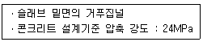
- 5MPa이상
- 10MPa 이상
- 14MPa이상
- 16MPa 이상
(정답률: 76%)
17. 콘크리트 시방배함설계에서 단위수량 166kg/m3, 물-시멘트비가 39.4% 이고, 시멘트비중 3.15, 공기랭 1.0%로 하는 경우 골재의 절대용적은?
- 0.690m
- 0.620m
- 0.580m
- 0.310m
(정답률: 63%)
18. 다음은 비파괴검사 시험 방법 중 철근배근 조사 방법은?
- 초음파속도법
- 전자파 레이더법
- 인발법
- 슈미트 해머법
(정답률: 59%)
19. 콘크리트의 받아들이기 품질검사 항목에 따른 판정기준으로 틀린 것은?
- 공기량의 허용오차는 ±1.5%이다.
- 염소이온량은 원칙적으로 0.3kg/m 이하이여야 한다.
- 슬럼프값이 30mm이상 80mm 미만일 경우의 허용오차는 ±15mm이다.
- 콘크리트 펌프의 최대 이론토출압력에 대한 최대 압송부하의 비율이 70%이하이여야한다.
(정답률: 42%)
20. 프리스트레스트 콘크리트에서 프리스트레싱할 때의 유의사항에 대한 설명으로 틀린 것은?
- 긴장재에 대해 순차적으로 프리스트레싱을 실시할 경우는 각 단계에 있어서 콘크이트에 유해한 응력이 생기지 않도록 하여야한다.
- 프리텐션 방식의 경우 진장재에 주는 인장력은 고정장치의 활동에 의한 손실을 고려하여야한다.
- 진장재에 인장력이 주어지도록 긴장할 때 인장력을 설계값 이상으로 주었다가 다시 설계값으로 낮추어 정확한 힘이 전달되도록 시공하여야 한다.
- 프리스트레싱 작업 중에는 어떠한 경우라도 인장장치 또는 고정장치 뒤에 사람이 서 있지 않도록 하여야한다.
(정답률: 90%)
2과목: 건설시공 및 관리
21. 어떤 공사의 공정에 따른 비용 증가율이 아래의 그림과 같을 때 이 공정을 계획보다 3일 단축하고자 하면, 소요되는 추가 직접 비용은 얼마인가?
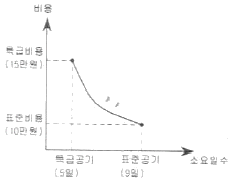
- 40000원
- 37500원
- 35000원
- 32500원
(정답률: 76%)
22. 유토곡선의 성질에 대한 설명으로 틀린 것은?
- 곡선의 상향구간은 절토구간이다.
- 곡선이 기선 아래에서 끝나면 토량의 과잉을 나타낸다.
- 곡선의 장점과 거점의 차가 두 점간의 전토량을 표시한다.
- 곡선의 저점은 성토에서 절토로 변이하는 지점이다.
(정답률: 73%)
23. 아스팔트 포장에 주로발생하는 소성변형의 발생원인에 대한 설명으로 틀린 것은?
- 하절기의 이상 고온
- 아스콘에 아스팔트량이 적을 때
- 침입도가 큰 아스팔트를 사용한 경우
- 골재의 최대 치수가 적은 경우
(정답률: 44%)
24. 네트워크 공정표의 장점에 대한 설명으로 틀린 것은?
- 중점관리가 용이하다.
- 전체와 부분의 관련을 이해하기 쉽다.
- 기자재, 노무 등 배치원인 계획이 합리적으로 이루어 진다.
- 작성 및 수정이 쉽다.
(정답률: 80%)
25. 아스팔트 포장설계에 이용되는 최적아스팔트 함량을 결정하기 위해 마샬안정도시험을 수행한다. 다음중 최적아스팔트 함량 결정에 이용되지 않는 것은?
- 회복탄성계수
- 공극물
- 포화도
- 흐름치
(정답률: 52%)
26. 연약지반 개량공법중 개량 원리가 다른 것은?
- 모래다짐말뚝(sand compaction pile) 공법
- 바이브로 플로테이션(vibro flotation) 공법
- 동다점 (dynamic compaction) 공법
- 선행재하(preloading) 공법
(정답률: 45%)
27. 우물통의 침하공법 중 초기에는 자중으로 침하 되지만 심도가 깊어짐에 따라 레일, 철괴, 콘크리트블록, 흙가마니 등이 사용되는 공법은 무엇인가?
- 발파에 의한 침하 공법
- 물하중식 침하 공법
- 재하중에 의한 공법
- 분기식 침하공법
(정답률: 73%)
28. 아래의 표에서 설명하는 교량 가설공법의 명칭은?
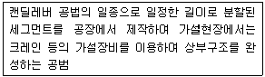
- F.S.M
- I.L.M
- M.S.S
- P.S.M
(정답률: 49%)
29. 함수비가 큰 점토질 흙의 다짐에 가장 적합한 기계는?
- 로두 롤러
- 진동 롤러
- 탬핑 롤러
- 타이어 롤러
(정답률: 85%)
30. 뉴매틱 케이슨 기초의 일반적은 특징에 대한 설명으로 틀린 것은?
- 지하수를 저하시키지 않으며, 히빙, 보일링을 방지할 수 있으므로 인접 구조물의 침하 우려가 없다.
- 오픈 케이슨보다 침하공정이 빠르고 장애물 제거가 쉽다.
- 지형 및 용도에 따른 다양한 형상에 대응할 수 있다.
- 소음과 진동이 없어 도심지 공사에 적합하다.
(정답률: 60%)
31. 암거의 매설깊이는 1.5m, 암거와 암거 상투 지하수면 최저점과의 거리가 10cm, 지하수면의 구배가 4.5°이다. 지하수면의 깊이를 1m로 하려면 암거간 매설거리는 얼마로 해야하는가?
- 4.8m
- 10.2m
- 15.2m
- 61m
(정답률: 50%)
32. 버킷의 용량이 0.6m3, 버킷계수가 0.9, 작업효울이 0.7, 싸이클 타임이 25초 일 때 파워 쇼벨의 시간당 작업량은? (단, 본박 토량으로 구하며, 토량변화율 L=1.25, C=0.9)
- 27.4m3/h
- 35.5m3/h
- 43.5m3/h
- 54.4m3/h
(정답률: 65%)
33. 교대에서 날개벽(Wing)의 역할로 가장 적당한 것은?
- 배면(背面)토사를 보호하고 교대 부근의 세굴을 방지한다.
- 교대의 하중을 부담한다.
- 유량을 경감하여 토사의 퇴적을 촉진시킨다.
- 교량의 상부구조를 지지한다.
(정답률: 83%)
34. 함수비 조절과 재료혼합을 위하여 사용되는 기계는?
- 스크레이퍼(Scraper)
- 스태빌라이져(Stabilizer)
- 콤펙트(Compactor)
- 불도저(Buldozer)
(정답률: 63%)
35. 아래의 표에서 설명하는 터널공법의 명칭으로 옳은 것은?
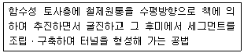
- 아일랜드 공법
- 침매 공법
- 쉴드 공법
- TBM공법
(정답률: 68%)
36. 아래의 표에서 설명하는 댐은?
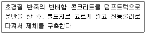
- Roller compact concrete
- Rock fill dam
- Gravity dam
- Earthdam
(정답률: 67%)
37. 터널굴착 방법 중 기계굴착 방법의 특징에 대한 설명으로 틀린 것은?
- 견고한 암반에 주로 적용한다.
- 폭발물을 사용하지 않으므로 안정성이 높다.
- 원지반의 이완이 적어서 지보공이 절약된다.
- 기계의 방향제어를 정확히 관리 하면 여굴이 감소하므로 굴착량과 콘크리트을 절감할 수 있다.
(정답률: 62%)
38. 현장에서 타설하는 피어공법 중 시공 시 케이싱튜브를 인발할 때 철근이 따라올라오는 공산(共産)현상이 일어나는 단점이 있는 것은?
- 시카고 공법
- 돗바늘 공법
- 베노토공법
- RCD(Reverse Circulation Drill) 공법
(정답률: 75%)
39. 사질토를 재료로 하여 45000m 의 성토를 하는 경우 굴착토량과 운반토량은 각각 얼마인가? (단, 토량환산계수 L=1.25, C=0.9)
- 36000m3, 50000m3
- 4⑤00m3, 50625m3
- 4⑤00m3, 56250m3
- 50000m3, 62500m3
(정답률: 66%)
40. 벤토나이트 공법을 써서 굴착벽면의 붕괴를 막으면서 굴착된 구멍에 철근 콘크리트를 넣어 말뚝이나 벽체를 연속적으로 만드는 공법은?
- Slurry Wall공법
- Earth Dril공법
- Earth Anchor공법
- Open Cut공법
(정답률: 79%)
3과목: 건설재료 및 시험
41. 시멘트의 분말도(粉末度)에 대한 설명으로 틀린것은?
- 분말도 시험방법에는 표준체(45m)에 의한 방법과 비표면적을 구하는 블레인방법 등이 있다.
- 비표면적이란 시멘트 1g의 입자의 전표면적을 cm3로 나타낸 것으로 시멘트의 분말도를 나타낸다.
- KS L 5201에 구정된 포틀랜드 시멘트의 분말도는 2000cm2/g 이상이다.
- 시멘트의 품질이 일정한 경우 분말도가 클수록 수화작용이 촉진되므로 응결이 빠르며 초기강도가 높아진다.
(정답률: 57%)
42. 목재에 대한 일반적인 설명으로 틀린 것은?
- 목재가 공극을 포함하지 않은 실제 부분의 비중을 진비중이라 하며, 일반적으로 1.48~1.56정도이다.
- 목재는 함수율의 변화에 따라 현저한 반비례하므로 비중을 알면 강도 및 탄성계수를 추정할 수 있다.
- 일반적으로 목재의 강도는 비중에 반비례하므로 비중을 알면 강고 및 탄성계수를 추정할 수 있다.
- 목재의 강도 및 탄성은 하주의 작용방향과 섬유방하의 관계에 따라 현저한 차이가 생긴다.
(정답률: 45%)
43. 조암광물에 대한 설명 중 틀린 것은?
- 석영은 무색, 투명하며 산 및 풍화에 대한 저항력이 크다.
- 사장석은 AI, Ca, Na, K 등의 규산화합물이며 풍화에 대한 저항력이 크다.
- 백운석은 산에 녹기 수운 광물이다.
- 석고는 경도가 1.5~2.0 정도이고 입상, 편상, 섬유 모양으로 결합되어 있다.
(정답률: 58%)
44. 폭약 취급에 대한 설명으로 틀린 것은?
- 다이나마이트는 직사광선을 피한다.
- 뇌관과 폭약은 함께 보관한다.
- 운반 중에 충격을 주지 않는다.
- 흡습, 동결되지 않도록 한다.
(정답률: 81%)
45. 역청 유제에 관한 다음 설멸으로 틀린 것은?
- 점토계 우제는 우화제로서 벤토나이트, 점토무기수산화물과 같이 물에 녹지 않는 광물질을 수중에 분산시켜 이것에 역청재를 가하여 유화시킨 것으로서 유화액은 산성이다.
- 음이온계 유제는 적당한 우화제를 가하여 희박알칼리 수용액 중에 아스팔트 입자를 분산시켜 생성한 미립자 표면을 전기적으로 부(-)로 대전 시킨 것이다.
- 양이온계 유제의 유화약은 산성이다.
- 역청 유체는 유제의 분해 속도에 따라 RS, MS, SS의 세 종류로 분류할수 있다.
(정답률: 38%)
46. 아래의 표에서 설명하는 것은?
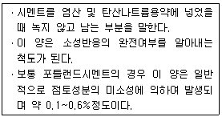
- 강열감량
- 불용해잔분
- 수경률
- 규산율
(정답률: 75%)
47. 역청재료의 점도를 측정하는 시험방법이 아닌 것은?
- 앵글러법
- 세이볼트법
- 환구법
- 스토머법
(정답률: 68%)
48. 고무혼입 아스팔트(rubberized asphalt)를 스트레이트 아스팔트와 비교할 때 다음 설명 중 옳지 않은 것은?
- 응집성 및 부착력이 크다.
- 마찰계수가 크다
- 충격저항이 크다.
- 감온성이 크다.
(정답률: 76%)
49. 다음중 재료에 작용하는 반복하중과 관계있는 성질은?
- 크리프(creep)
- 건조수축(dry shrinkage)
- 응력완화(relaxstion)
- 피로(fatigue)
(정답률: 81%)
50. 잔골재 밀도 시험의 결과가 아래 표와 같을 때 이 잔골재의 진밀도는?
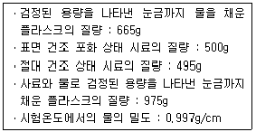
- 2.65g/cm3
- 2.67g/cm3
- 2.71g/cm3
- 2.75g/cm3
(정답률: 45%)
51. 시멘트의 응결과 경화에 대한 설명으로 틀린 것은?
- 시멘트는 물과 접해도 바로 굳지 않고 어느 기간 동안 유동성을 유지한 후, 재차 상당한 발열반응과 함께 수화되면서 유동성을 잃게 된다.
- 응결이 10~30분을 벗어나면 이상응결이라 한다.
- 시멘트에 석고가 첨가되지 않으면 C3A가 급격히 수화되어 급결이 일어난다.
- 수화과정에서 생성된 시멘트 수화물의 겔은 미세한 집합체오서, 밀도가 높은 경화체가 되면서 강도를 증가시킨다.
(정답률: 36%)
52. 플라이애시를 사용한 콘크리트의 특성으로 옳은 것은?
- 작업성 저하
- 단위수량감소
- 수화열 증가
- 건조수축 증가
(정답률: 52%)
53. 다음 중 시멘트 저장시 주의사항으로 옳지 않은 것은?
- 포대시멘트 쌓기의 높이는 13포대를 한도로한다.
- 저장 중에 약간이라도 굳은 시멘트는 공사에 사용하지 않아야 한다.
- 통풍이 잘 되도록 환기창을 설치하는 것이 좋다.
- 포대 시멘트는 지면에서 0.3m 이상 떨어진 마루 위에 저장한다.
(정답률: 70%)
54. 혼화재료에 대한 다음 설명 중 옳은 것은?
- 지연제는 준자가 상당히 작아 시멘트입자 표면에 흡착되어 물과 시멘트와의 접축을 차단하여 조기 수화작용을 빠르게 한다.
- 감수제는 시멘트의 입자를 분산시켜 시멘트풀의 유동성을 감소시키거나 워커빌리티를 좋게 한다.
- 경화 촉진제는 순도가 높은 염화칼슘을 사용하며 시멘트 질량의 4~6%정도 넣어 사용하면 강도가 증가한다.
- 포졸란을 사용하면 시멘트가 절약되며 콘크리트의 장기 강도와 수밀성이 커진다.
(정답률: 46%)
55. 골재의 체가름시험에 대한 설명으로 틀린 것은?
- 굵은 골재의 경우 사용하는 골재의 최대지수(mm)의 2배를 시료의 최소 건조 질량(kg)으로 한다.
- 시험에 사용할 시료는 1⑤±5℃에서 24시간, 일정 질량이 될 때까지 작업을 한다.
- 체가름은 1분간 각 체를 통과하는 것이 전시료질량의 0.1%이하로 될 때까지 작업을 한다.
- 페 눈에 막힌 알갱이는 파쇄되지 않도록 주의하면서 되밀어 체에 남은 사료로 간주한다.
(정답률: 44%)
56. 폴라이 애시의 품질시험 항목에 포함되지 않는 것은?
- 이산화규소(%) 함유량
- 강열감량(%)
- 활성도 지수(%)
- 길이변화(%)
(정답률: 48%)
57. 강을 적당한 온도(800~1000℃)로 일정한 시간 가열한 후 로 안에서 천천히 냉각시켜 가공성과 기계적, 물리적 성질을 향상시키는 열처리 방법은?
- 풀림
- 불림
- 담금질
- 뜨임질
(정답률: 52%)
58. 지오텍스타일의 특징에 관한 설명으로 틀린 것은?
- 인장강도가 크다.
- 수축을 방지한다.
- 탄성계수가 크다.
- 열에 강하고 무게가 무겁다.
(정답률: 70%)
59. 골재의 단위용적질량이 1.7t/m3, 밀도가 2.6g/cm3일 때 이 골재의 공극률은?
- 65.4%
- 52.9%
- 47.1%
- 34.6%
(정답률: 56%)
60. 석재료로서 화강암의 특징을 설명한 것으로 틀린 것은?
- 재화성이 강하므로 고열을 받는 내화용재료로 많이 사용된다.
- 조직이 균일하고 내구성 및 강도가 크다
- 균열이 적기 때문에 비교적 큰 재료를 체취할 수 있다.
- 외관이 아름다워 장식재로 사용할 수 있다.
(정답률: 87%)
4과목: 토질 및 기초
61. 황동면위의 흙을 몇 개의 연직 평행한 절편으로 나누어 사면의 안정을 해석하는 방법이 아닌 것은?
- Fellenius 방법
- 마찰원법
- Spencer 방법
- Bishop 간편법
(정답률: 62%)
62. 점성토시료를 교란시켜 재성형을 한 경우 시간이 지남에 따라 강도가 증가하는 현상을 나타내는 용러는?
- 크립(creep)
- 턱소트로피(thixotropy)
- 이방성(anisotropy)
- 아이소크론(isocron)
(정답률: 68%)
63. 두께 2cm인 점토시료의 입밀시험결과 전압밀량의 90%에 도달하는 데 1시간이 걸렸다. 만일 같은 조건에서 같은 점토로 이우러진 2m의 토층위에 구조물을 축조한 경우 최종침하량의 90%에 도달하는 데 걸리는 시간은?
- 약 250일
- 약 368일
- 약 417일
- 약 525일
(정답률: 50%)
64. ct = 1.8t/m3, cu = 3.0t/m2, ø = 0의 점토지반을 수평면과 50°의 기울기로 굴착하려고 한다. 안전율을 2.0으로 가정하여 평면활동 이론에 의해 착깊이를 결정하면?
- 2.80m
- 5.60m
- 7.12m
- 9.84m
(정답률: 42%)
65. 2m×3m 크기의 직사각형 기초에 6t/m2 의 등분포하둥이 작용할 때 기초아래 10m 되는 깊이에서의 응력증가량을 2:1분포법으로 구한 값은?
- 0.23t/m2
- 0.54t/m2
- 1.33t/m2
- 1.83t/m2
(정답률: 49%)
66. 4m×4m인 정사각형 시초를 내무마찰각 ø = 20° 점착력 c = 3t/m3인 지반에 설치하였다. 흙의 단위 중량 γ = 1.9t/m3 이고 안전율이 3일 때 기초의 허용하중은? (단, 기초의 길이는 1m이고, Nq = 7.44, Nγ = 4.97, Nc = 17.69 이다.)
- 378t
- 524t
- 675t
- 814t
(정답률: 52%)
67. 두 대의 기둥하중 Q1 = 30t, Q2 = 20t을 박기 위한 사다리꼴 기초의 폭 B1, B2를 구하면? (단, 지반의 허용지지력 q3 = 2t/m2)
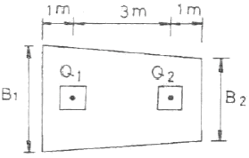
- B1=7.2m, B2=2.8m
- B1=7.8m, B2=2.2m
- B1=6.2m, B2=3.8m
- B1=6.8m, B2=3.2m
(정답률: 39%)
68. 입경가적곡선에서 가적통과율 30%에 해당하는 입경이 D30 = 1.2mm일 때 다음 설명 중 옳은 것은?
- 균등계수를 계산하는데 사용된다.
- 이 흙은 유효입경은 1.2mm이다.
- 시료의 전체무게 중에서 30%가 1.2mm 보다 작은 입자이다.
- 시료의 전체무게 중에서 30%가 1.2mm 보다 큰 입자이다.
(정답률: 64%)
69. 함수비 18%의 흙 500kg을 함수비 24%로 만들려고 한다. 추가해야하는 물의 양은?
- 80.41kg
- 54.52kg
- 38.92kg
- 25.43kg
(정답률: 46%)
70. 그림과 같이 3층으로 되어 있는 성토층의 수평방향의 평균투구계수는?
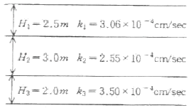
- 2.97 × 10-4cm/sec
- 3.04 × 10-4cm/sec
- 6.97 × 10-4cm/sec
- 4.04 × 10-4cm/sec
(정답률: 60%)
71. 실내시험에 의한점토의 강도 증가율(Cu/P)산정 방법이 아닌 것은?
- 소성지수에 의한 방법
- 비배수 전단강도에 의한 방법
- 압일비배수 삼축압축기험에 의한 방법
- 직접전단시험에 의한 방법
(정답률: 56%)
72. 다음 그림과 같은 Sampler에서 면적비는 얼마인가?
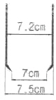
- 5.80%
- 5.97%
- 15.62%
- 14.80%
(정답률: 57%)
73. 다음 중 사운딩 시험이 아닌 것은?
- 표준관입시험
- 평판재하시험
- 콘 관입시험
- 베인시험
(정답률: 64%)
74. 무게 300kg의 드롭헴머로 3m 높이에서 말뚝을 타입할 때 1회 타격당 최종 침하량이 1.5cm 발생하였다. Sander공식을 이용하여 산정한 말뚝의 허용지지력은? (단, 물의 비열은 42kJ/kgㆍK, 급탕온도는 70℃, 급수온도는 10℃ 이다.)
- 7.50t
- 8.6t
- 9.37t
- 15.67t
(정답률: 43%)
75. 점착력이 0.1kg/cm2, 내부마찰각이 30°인 흙에 수직응력 20kg/cm2을 가할 경우 전단응력은?
- 20.1kg/cm2
- 6.76kg/cm2
- 1.16kg/cm2
- 11.65kg/cm2
(정답률: 56%)
76. 접지압(또는 지반반력)이 그림과 같이 되는 경우는?
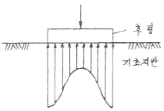
- 후팅:강성, 기초지반:점토
- 후팅:강성, 기초지반:모래
- 후팅:연성, 기초지반:점토
- 후팅:연성, 기초지반:모래
(정답률: 58%)
77. 현장에서 다짐된 사질토의 상대다짐도가 95%이고 최대 및 최소 건조단위중량이 각각 1.76t/m3, 1.5t/m3이라고 할 때 현장시료의 상대밀도는?
- 74%
- 69%
- 64%
- 59%
(정답률: 51%)
78. 그림과 같은 옹벽배변에 작용하는 토압의 크기를 Rankine의 토압공식으로 구하면?
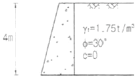
- 3.2t/m
- 3.7t/m
- 4.7t/m
- 5.2t/m
(정답률: 61%)
79. 도로의 평판재하시험을 끝낼 수 있는 조건이 아닌 것은?
- 하중강도가 현장에서 예상되는 최대 접지합을 초과시
- 하중강도가 그 지방의 항복점을 넘을 때
- 침하가 더 이상 일어나지 않을 때
- 침하량이 15mm에 다할 때
(정답률: 56%)
80. 그림의 유선망에 대한 설명 중 틀린 것은? (단, 흙의 투수계수는 2.5×103cm/sec)
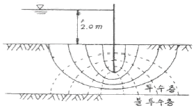
- 유선의 수=6
- 등수두선의 수=6
- 유로의 수=5
- 전침투유량 Q=0.278cm3/sec
(정답률: 64%)